SQL: Aggregates, Subqueries,
Joins, Outer Joins
Data Science 310 — Boston University
Based on notes by David G. Sullivan
Aggregate Functions
The SELECT clause can include an aggregate function , which performs a computation on a collection of values of an attribute.
Example: find the average capacity of rooms in the Sci Ctr:
SELECT AVG (capacity)FROM RoomWHERE name LIKE 'Sci Ctr%' ;
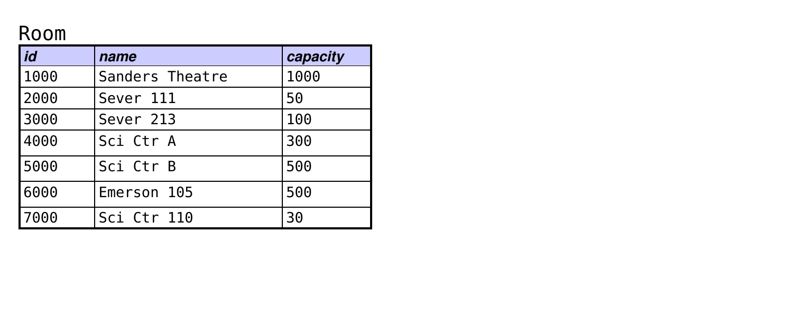
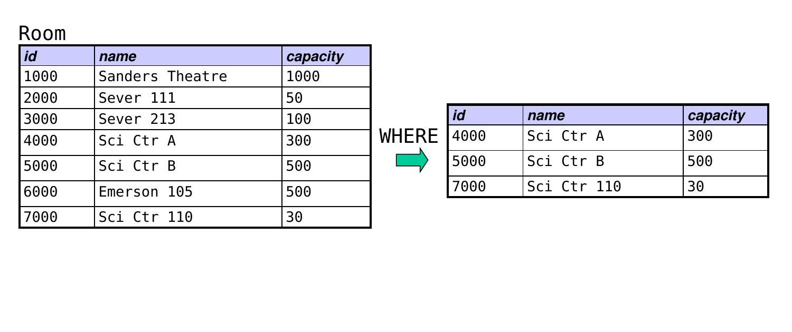
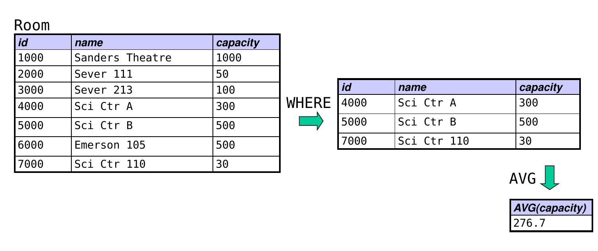
Aggregate Functions (cont.)
Possible functions include:
MIN, MAX: find the minimum/maximum of a value
AVG, SUM: compute the average/sum of numeric values
COUNT: count the number of values
For AVG, SUM, and COUNT, we can add the keyword DISTINCT to perform the computation on all distinct values.
example: find the number of students enrolled for courses:
SELECT COUNT (DISTINCT student)FROM Enrolled;
Aggregate Functions (cont.)
SELECT COUNT(*) will count the number of tuples in the result of the select command.
example: find the number of DS courses
SELECT COUNT (* )FROM CourseWHERE name LIKE 'ds%' ;
COUNT(attribute) counts the number of non-NULL values of attribute, so it won’t always be equivalent to COUNT(*)
Aggregate functions cannot be used in the WHERE clause.
Practice with aggregate functions: write a query to find the largest capacity of any room in the Science Center:
SELECT MAX (capacity)FROM RoomWHERE name LIKE 'Sci Ctr%' ;
Aggregate Functions (cont.)
What if we wanted the name of the room with the max. capacity?
The following will not work!
SELECT name, MAX (capacity)FROM RoomWHERE name LIKE 'Sci Ctr%' ;
In general, you can’t mix aggregate functions with column names in the SELECT clause.
Subqueries
A subquery allows us to use the result of one query in the evaluation of another query.
the queries can involve the same table or different tables
We can use a subquery to solve the previous problem:
SELECT name, capacityFROM RoomWHERE name LIKE 'Sci Ctr%' AND capacity = (SELECT MAX (capacity) -- the subquery FROM RoomWHERE name LIKE 'Sci Ctr%' );
Since the subquery evaluates to 500, this is equivalent to:
SELECT name, capacityFROM RoomWHERE name LIKE 'Sci Ctr%' AND capacity = 500 ;
How could we find the shortest PG-13 movie in the database?
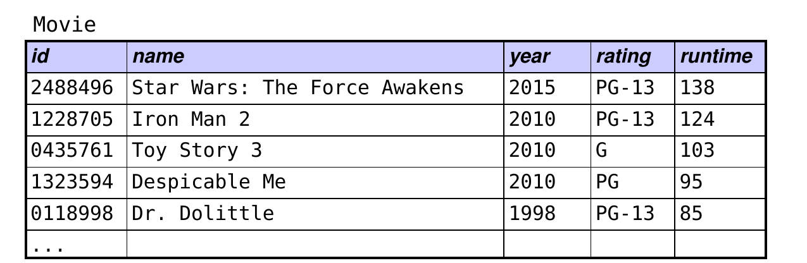
A. SELECT name, MIN(runtime) FROM Movie WHERE rating = 'PG-13';
B. SELECT name, runtime FROM Movie WHERE runtime = (SELECT MIN(runtime) FROM Movie WHERE rating = 'PG-13');
C. SELECT name, runtime FROM Movie WHERE rating = 'PG-13' AND runtime = (SELECT MIN(runtime) FROM Movie WHERE rating = 'PG-13');
D. two of these would work
E. all three would work
How could we find the shortest PG-13 movie in the database? (answer)
A. SELECT name, MIN(runtime) FROM Movie WHERE rating = 'PG-13'; ← no: can’t combine an aggregate with a “plain” column unless you are grouping by the column
B. SELECT name, runtime FROM Movie WHERE runtime = (SELECT MIN(runtime) FROM Movie WHERE rating = 'PG-13'); ← could also get non-PG-13 movies with the same runtime
C. SELECT name, runtime FROM Movie WHERE rating = 'PG-13' AND runtime = (SELECT MIN(runtime) FROM Movie WHERE rating = 'PG-13'); ← correct!
A Restriction on Aggregate Functions
SELECT name, MIN (runtime)FROM MovieWHERE rating = 'PG-13' ;This does not work in standard SQL!
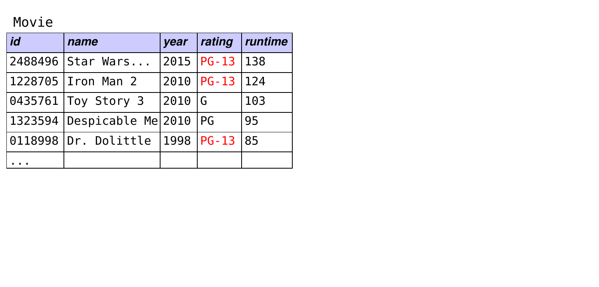
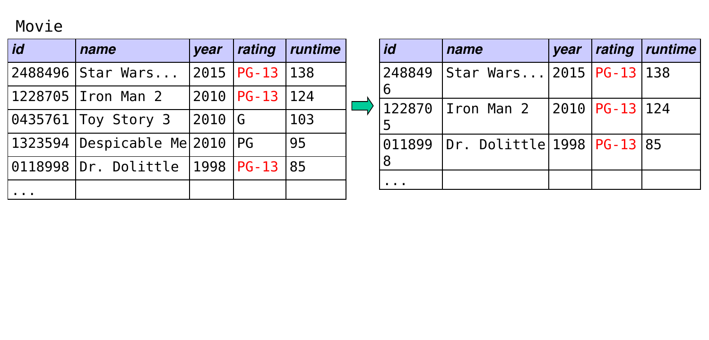
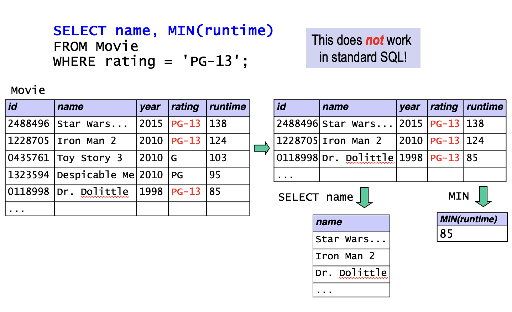
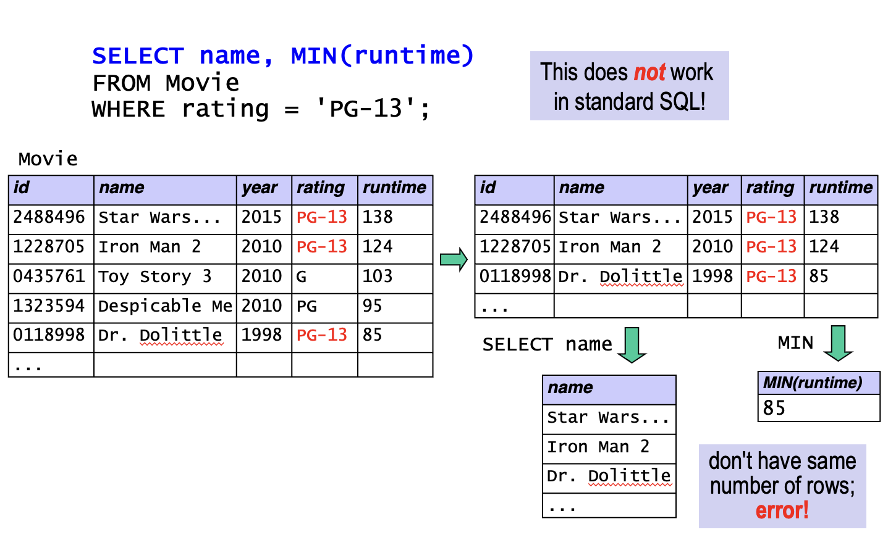
A Restriction on Aggregate Functions (cont.)
SELECT name, MIN (runtime)FROM MovieWHERE rating = 'PG-13' ; -- does not work in standard SQL!
In general, a SELECT clause cannot combine:
an aggregate function
a column name that is on its own (and is not being operated on by an aggregate function)
We’ll see an important exception to this soon.
Warning: SQLite lets you violate this rule, but…
doing so is not standard SQL
you should not do this in your work for this class!
Subqueries and Set Membership
Subqueries can be used to test for set membership in conjunction with the IN and NOT IN operators.
example: find all students who are not enrolled in CSCI E-268
SELECT nameFROM StudentWHERE id NOT IN (SELECT studentFROM EnrolledWHERE course = 'cscie268' );
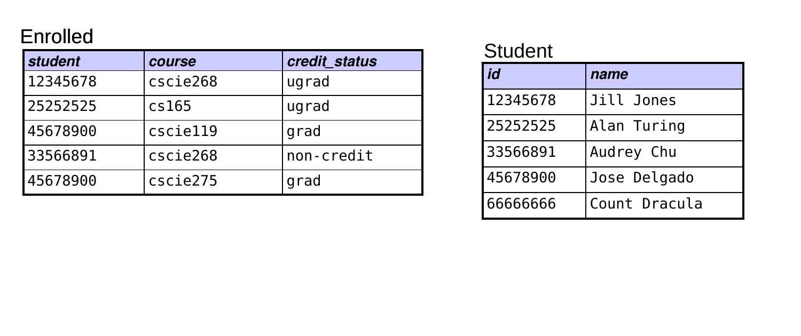
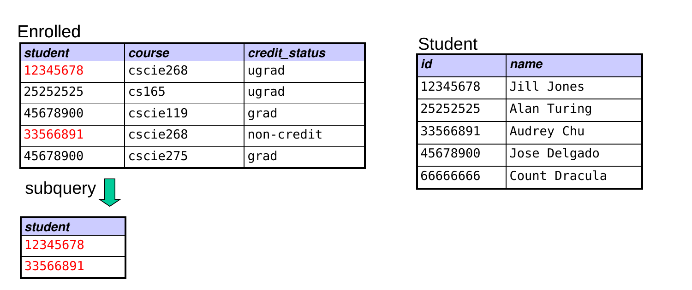
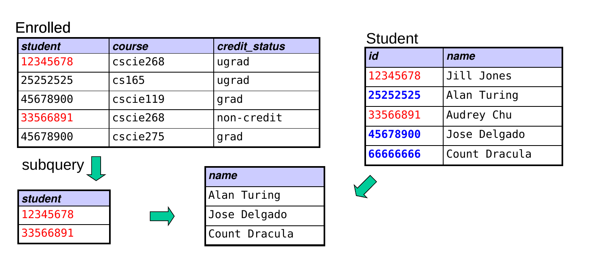
Subqueries and Set Comparisons
Subqueries also enable comparisons with elements of a set using the ALL and SOME operators.
example: find rooms larger than all rooms in Sever Hall
SELECT name, capacityFROM RoomWHERE capacity > ALL (SELECT capacityFROM RoomWHERE name LIKE 'Sever%' );
example: find rooms larger than at least one room in Sever
SELECT name, capacityFROM RoomWHERE capacity > SOME (SELECT capacityFROM RoomWHERE name LIKE 'Sever%' );
Applying an Aggregate Function to Subgroups
A GROUP BY clause allows us to:
group together tuples that have a common value
apply an aggregate function to the tuples in each subgroup
Example: find the enrollment of each course:
SELECT course, COUNT (* )FROM EnrolledGROUP BY course;
When you group by an attribute, you can include it in the SELECT clause with an aggregate function.
because we’re grouping by that attribute, every tuple in a given group will have the same value for it
Evaluating a query with GROUP BY
SELECT course, COUNT (* )FROM EnrolledGROUP BY course;
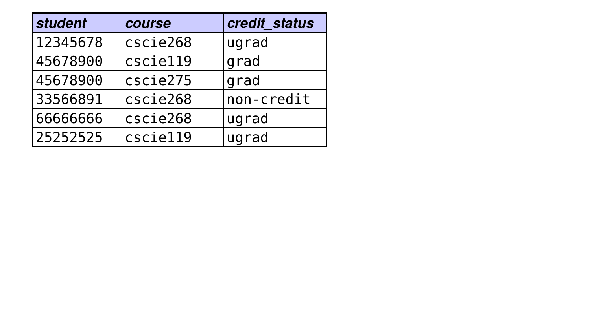
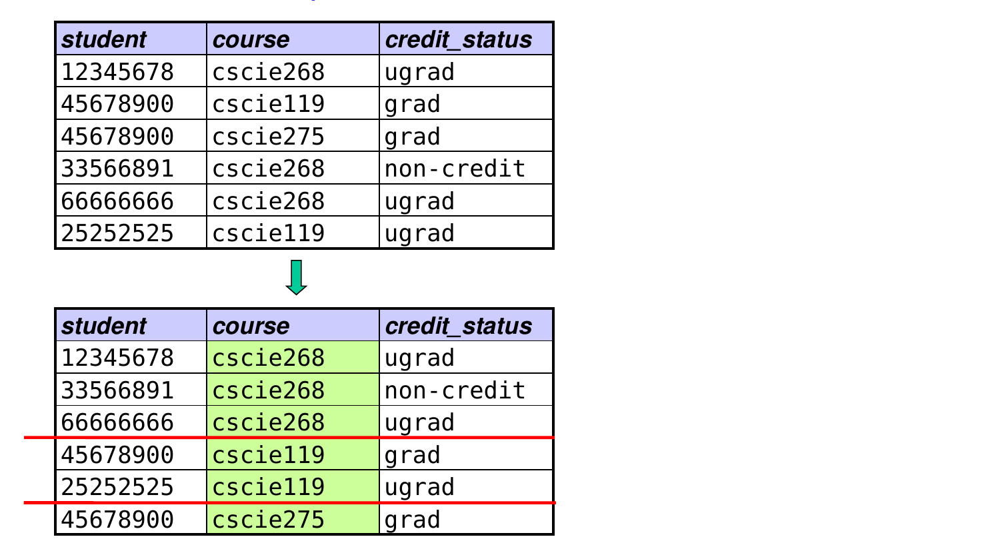
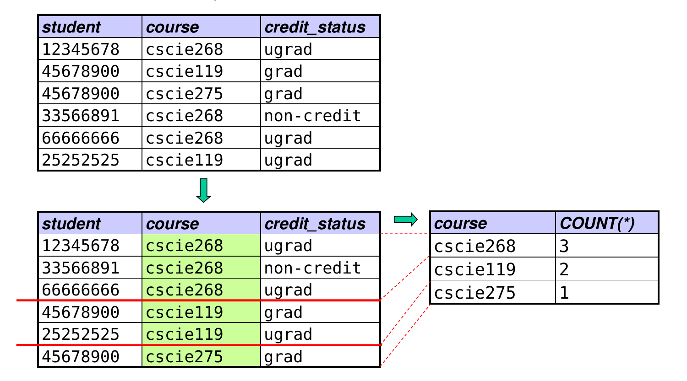
Applying a Condition to Subgroups
A HAVING clause allows us to apply a selection condition to the subgroups produced by a GROUP BY clause.
example: find enrollments of courses with at least 2 students
SELECT course, COUNT (* )FROM EnrolledGROUP BY courseHAVING COUNT (* ) > 1 ;
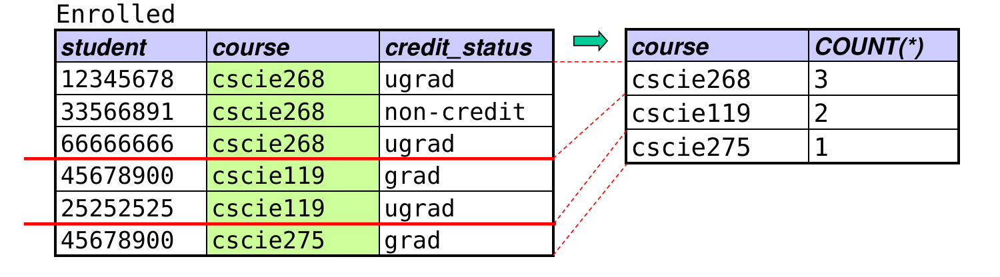
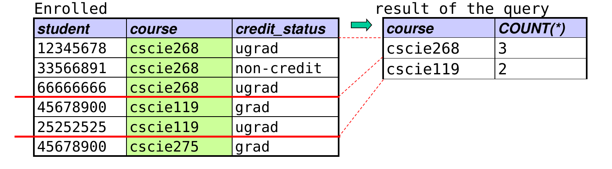
Important difference:
a WHERE clause is applied before grouping
a HAVING clause is applied after grouping
Subqueries in FROM clauses
A subquery can also appear in a FROM clause.
Useful when you need to perform a computation on values obtained by applying an aggregate.
example: find the average enrollment in a DS course
SELECT AVG (count )FROM (SELECT course, COUNT (* ) as count FROM EnrolledGROUP BY course) AS enrollCountsWHERE course LIKE 'ds%' ;
Some systems require that you assign a FROM-clause subquery a name (e.g., enrollCounts above).
Sorting the Results
An ORDER BY clause sorts the tuples in the result of the query by one or more attributes.
ascending order by default, use DESC to get descending
example:
SELECT name, capacityFROM RoomWHERE capacity > 100 ORDER BY capacity DESC , name;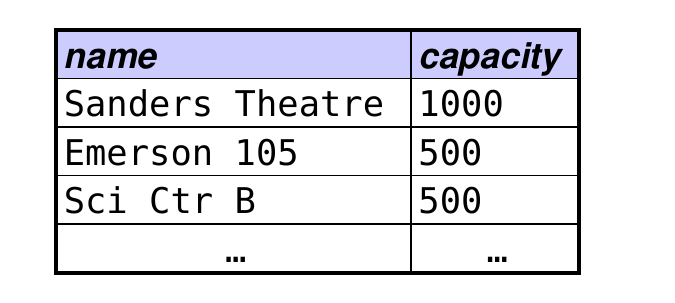
Set Operations
UNION, INTERSECTION, EXCEPT (set difference)
Example: find the IDs of students and advisors
SELECT studentFROM EnrolledUNION SELECT advisorFROM Advises;
Outer Joins
Syntax for left outer join:
SELECT …FROM T1 LEFT OUTER JOIN T2 ON join conditionWHERE …
The result is equivalent to:
forming the Cartesian product T1 x T2
selecting the tuples in the Cartesian product that satisfy the join condition in the ON clause
including an extra tuple for each row from T1 that does not have a match with a row from T2 based on the ON clause
the T2 attributes in the extra tuples are given null values
applying the remaining clauses as before
Also available: RIGHT OUTER JOIN, FULL OUTER JOIN
Outer Joins (cont.)
Example: get the IDs and majors of all enrolled students.
SELECT DISTINCT Enrolled.student, deptFROM Enrolled LEFT OUTER JOIN MajorsInON Enrolled.student = MajorsIn.student;
Outer Joins (cont.)
Another example: find the IDs and majors of all students enrolled in cscie268 (including those with no major):
SELECT Enrolled.student, deptFROM Enrolled LEFT OUTER JOIN MajorsInON Enrolled.student = MajorsIn.studentWHERE course = 'cscie268' ;
in this case, there is a WHERE clause with an additional selection condition
the additional condition belongs in the WHERE clause because it’s not a join condition – i.e., it isn’t used to match up tuples from the two tables
Note: when there is no additional condition, we don’t need a WHERE clause – the join condition is in the ON clause.
Evaluating a SELECT command
SELECT column1, column2, …FROM table1, table2, .. ... .
The result is equivalent to:
evaluating any subqueries in the FROM clause
forming the Cartesian product of the tables in the FROM clause: table1 x table2 x …
if there is an OUTER JOIN, applying its join condition and adding extra tuples as needed
applying the remaining clauses in the following order:
CREATE TABLE
What it does: creates a relation with the specified schema
Basic syntax:
CREATE TABLE relation_name(CREATE TABLE Student(id CHAR (8 ), name VARCHAR (30 ));CREATE TABLE Room(id CHAR (4 ), name VARCHAR (30 ),INTEGER );
Data Types
An attribute’s type specifies the domain of the attribute.
The set of possible types depends on the DBMS.
Standard SQL types include:
INTEGER: a four-byte integer (-2147483648 to +2147483647)
CHAR(n): a fixed-length string of n characters
VARCHAR(n): a variable-length string of up to n characters
REAL: a real number (i.e., one that may have a fractional part)
NUMERIC(n, d): a numeric value with at most n digits, exactly d of which are after the decimal point
DATE: a date of the form yyyy-mm-dd
TIME: a time of the form hh:mm:ss
When specifying a non-numeric value, you should surround it with single quotes (e.g., ‘Jill Jones’ or ‘2007-01-26’).
CHAR vs. VARCHAR
CHAR(n): a fixed-length string of exactly n characters
the DBMS will pad with spaces as needed
example: with id CHAR(6), ‘12345’ will be stored as ‘12345 ’
VARCHAR(n): a variable-length string of up to n characters
the DBMS does not pad the value
In both cases, values will be truncated if they’re too long.
If a string attribute can have a wide range of possible lengths, it’s usually better to use VARCHAR.
Types in SQLite
SQLite has its own types, including:
It also allows you to use the typical SQL types, but it converts them to one of its own types.
As a result, the length restrictions indicated for CHAR and VARCHAR are not observed.
It is also more lax in type checking than typical DBMSs.
String Comparisons
String comparisons ignore any trailing spaces added for padding.
ex: an attribute named id of type CHAR(5)
insert a tuple with the value ‘abc’ for id
value is stored as ‘abc ’ (with 2 spaces of padding)
the comparison id = 'abc' is true for that tuple
In standard SQL, string comparisons using both = and LIKE are case sensitive.
some DBMSs provide a case-insensitive version of LIKE
In SQLite:
there are no real CHARs, so padding isn’t added
string comparisons using = are case sensitive
string comparisons using LIKE are case insensitive
'abc' = 'ABC' is false'abc' LIKE 'ABC' is true
Terms Used to Express Constraints
CREATE TABLE Student(id char (8 ) primary key ,varchar (30 ));CREATE TABLE Enrolled(student char (8 ),varchar (20 ), credit_status varchar (15 ),primary key (student, course));
no two tuples can have the same combination of values for the primary-key attributes (a uniqueness constraint)
a primary-key attribute can never have a null value
unique: specifies attribute(s) that form a (non-primary) key
not null: specifies that an attribute can never be null
CREATE TABLE Course(name varchar (20 ) primary key ,time , end_time time , room char (4 ),unique (start_time, end_time, room));CREATE TABLE Student(id char (8 ) primary key ,varchar (30 ) not null );
Terms Used to Express Constraints (cont.)
foreign key … references:
CREATE TABLE MajorsIn(student char (8 ),varchar (30 ),foreign key (student) references Student(id ),foreign key (dept) references Department(name));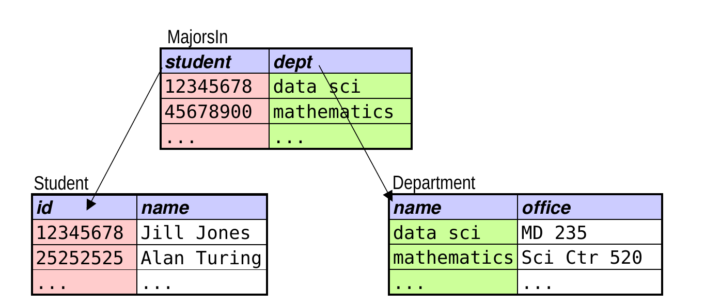
Terms Used to Express Constraints (cont.)
foreign key / references (cont.):
all values of a foreign key must match the referenced attribute(s) of some tuple in the other relation (known as a referential integrity constraint)
foreign-key attributes may refer to other attributes in the same relation:
```{sql} CREATE TABLE Employee( id char (10 ) primary key ,varchar (30 ), supervisor char (10 ),foreign key (supervisor) references Employee(id));```
a foreign-key attribute may have a null value
Enforcing Constraints
Example: assume that the tables below show all of their tuples.
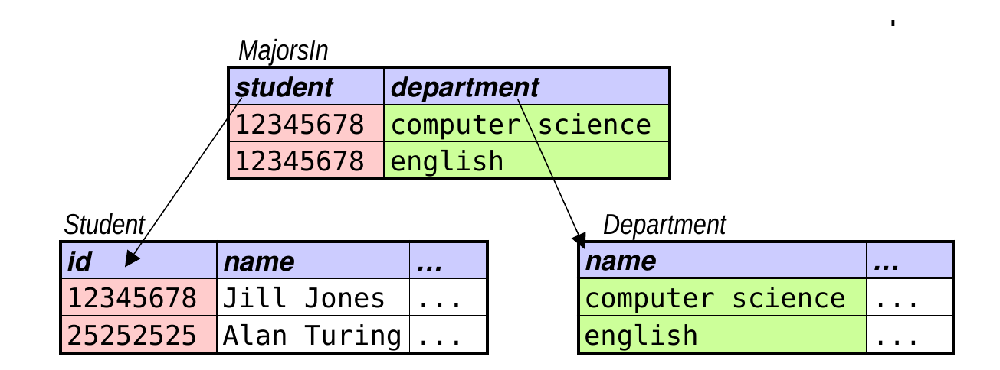
Which of the following operations would the DBMS allow?
adding (12345678, ‘John Smith’, …) to Student ← not allowed
adding (33333333, ‘Howdy Doody’, …) to Student ← allowed
adding (12345678, ‘physics’) to MajorsIn ← not allowed
adding (25252525, ‘english’) to MajorsIn ← allowed
INSERT
What it does: adds a tuple to a relation
Syntax:
INSERT INTO relation VALUES (val1, val2, …);
the values of the attributes must be given in the order in which the attributes were specified when the table was created
INSERT INTO MajorsIn VALUES ('10005000' , 'math' );
[ Recall the CREATE TABLE command: CREATE TABLE MajorsIn(student char(8), dept varchar(30), …); ]
INSERT (cont.)
INSERT INTO relation(attr1, attr2, …)VALUES (val1, val2, …);
allows you to:
specify values of the attributes in a different order
specify values for only a subset of the attributes
INSERT INTO MajorsIn(dept, student)VALUES ('math' , '10005000' );
If the value of a column is not specified, it is assigned a default value.
depends on the data type of the column
DELETE
What it does: remove one or more tuples from a relation
DELETE FROM table WHERE selection condition;DELETE FROM StudentWHERE id = '4567800' ;
Before deleting a row, we must first remove all references to that row from foreign keys in other tables.
ex: before deleting from Student, delete the corresponding rows in Enrolled and MajorsIn
UPDATE
What it does: modify attributes of one or more tuples in a relation
UPDATE table SET list of assignmentsWHERE selection condition;
UPDATE MajorsInSET dept = 'physics' WHERE student = '10005000' ;UPDATE CourseSET start_time = '11:00:00' , end_time = '12:30:00' WHERE name = 'cs165' ;
Writing Queries: Rules of Thumb
Start with the FROM clause. Which table(s) do you need?
If you need more than one table, determine the necessary join conditions.
for N tables, you typically need N – 1 join conditions
is an outer join needed – i.e., do you want unmatched tuples?
Determine if a GROUP BY clause is needed.
are you performing computations involving subgroups?
Determine any other conditions that are needed.
if they rely on aggregate functions, put in a HAVING clause
otherwise, add to the WHERE clause
is a subquery needed?
Fill in the rest of the query: SELECT, ORDER BY?
Which tables do I need?
Find the names of all rooms that DS majors have courses in.
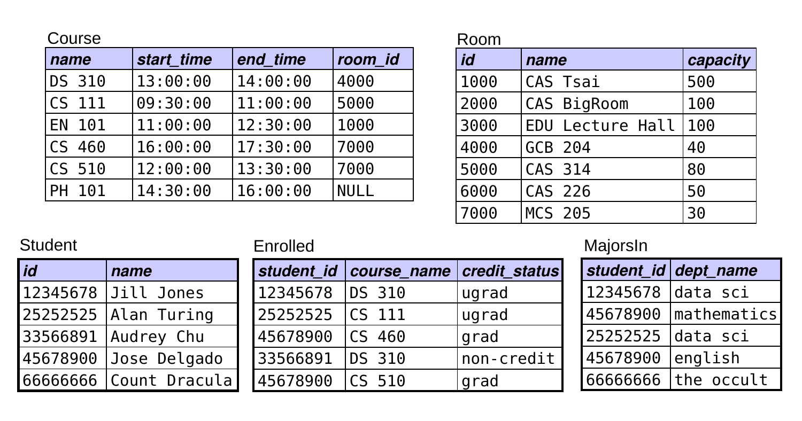
FROM Course, Room, Enrolled, MajorsIn
How many join conditions do I need?
Find the names of all rooms that DS majors have courses in.
SELECT FROM Course, Room, Enrolled, MajorsInWHERE ???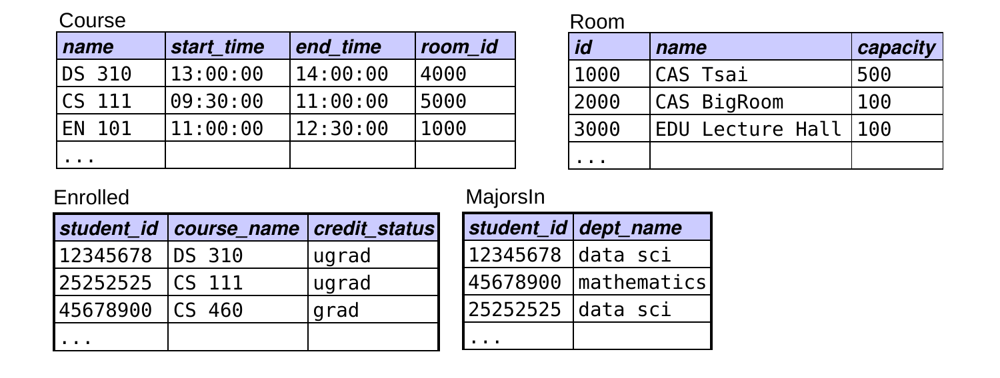
3 join conditions. For N tables, you need N – 1 join conditions!
How would I fix the other two?
Find the names of all rooms that DS majors have courses in.
SELECT FROM Course, Room, Enrolled, MajorsInWHERE room_id = id AND .. .
Qualify the ambiguous names – using aliases for the tables:
SELECT FROM Course C, Room R, Enrolled E, MajorsIn MWHERE room_id = id AND course_name = C.nameAND E.student_id = M.student_id
What else do I need?
Find the names of all rooms that DS majors have courses in.
SELECT FROM Course C, Room R, Enrolled E, MajorsIn MWHERE room_id = id AND course_name = C.nameAND E.student_id = M.student_id
The selection condition, plus DISTINCT in the SELECT clause:
SELECT DISTINCT R.nameFROM Course C, Room R, Enrolled E, MajorsIn MWHERE room_id = id AND course_name = C.nameAND E.student_id = M.student_idAND dept_name = 'data sci' ;
Writing Queries: Rules of Thumb
Start with the FROM clause. Which table(s) do you need?
If you need more than one table, determine the necessary join conditions.
for N tables, you typically need N – 1 join conditions
is an outer join needed? – i.e., do you want unmatched tuples?
Determine if a GROUP BY clause is needed.
are you performing computations involving subgroups?
Determine any other conditions that are needed.
if they rely on aggregate functions, put in a HAVING clause
otherwise, add to the WHERE clause
is a subquery needed?
Fill in the rest of the query: SELECT, ORDER BY?
Finding the Majors of Enrolled Students
We want the IDs and majors of every student who is enrolled in a course – including those with no major.
πstudent_id, dept_name (Enrolled ⟕ MajorsIn)
SELECT DISTINCT Enrolled.student_id, dept_nameFROM Enrolled LEFT OUTER JOIN MajorsInON Enrolled.student_id = MajorsIn.student_id;
Left Outer Joins
SELECT DISTINCT FROM EnrolledLEFT OUTER JOIN MajorsInON Enrolled.student_id =
The result is equivalent to:
forming the Cartesian product T1 x T2
selecting the rows in T1 x T2 that satisfy the join condition in the ON clause
including an extra row for each unmatched row from T1 (the “left table”)
filling the T2 attributes in the extra rows with nulls
applying the other clauses as before
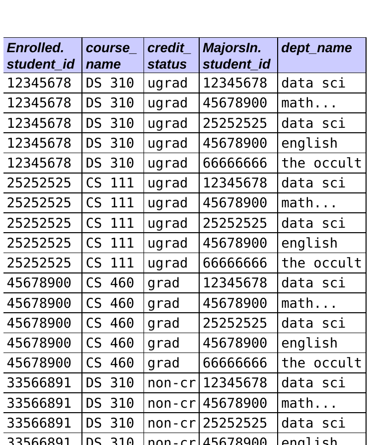
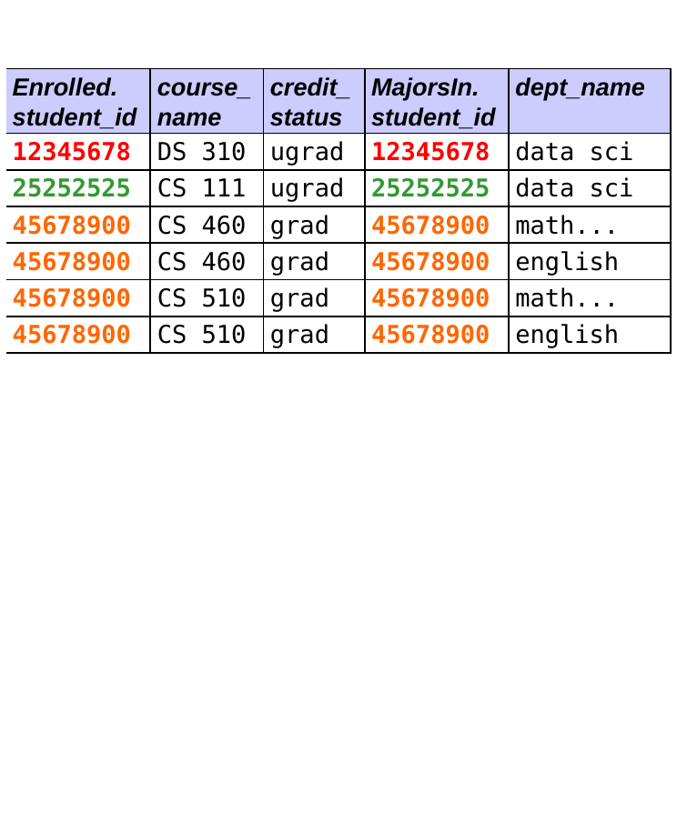
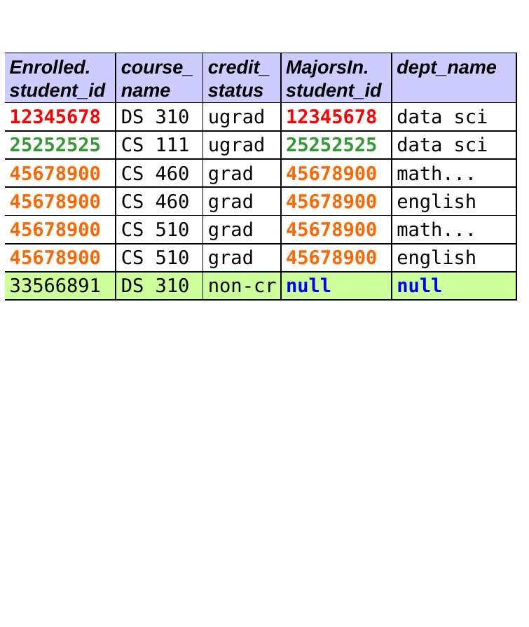
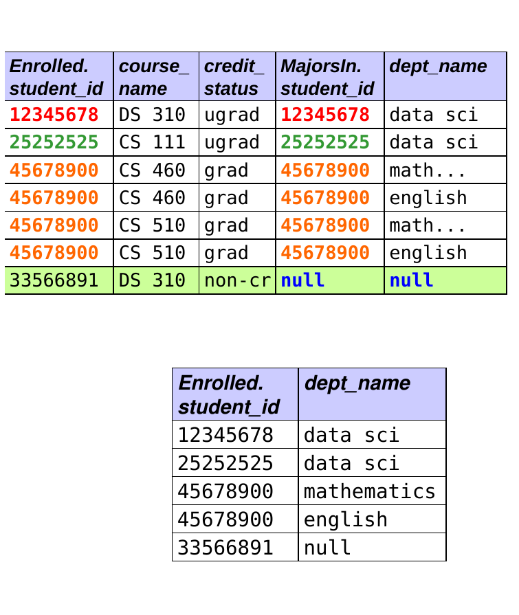
Outer Joins Can Have a WHERE Clause
Example: find the IDs and majors of all students enrolled in DS 310 (including those with no major):
SELECT Enrolled.student_id, dept_nameFROM Enrolled LEFT OUTER JOIN MajorsInON Enrolled.student_id = MajorsIn.student_idWHERE course_name = 'DS 310' ;
to limit the results to students in DS 310, we need a WHERE clause with the appropriate condition
this new condition should not be in the ON clause because it’s not being used to match up rows from the two tables
What does this give?
SELECT nameFROM Movie, Oscar;
The full Cartesian product!
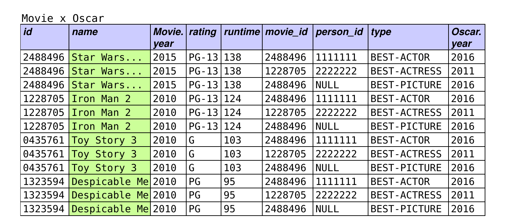
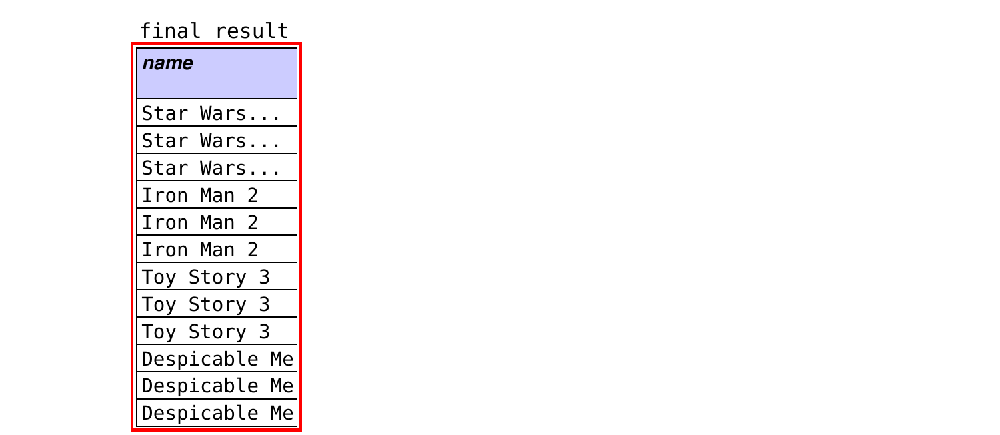
How can we get just the movies that won Oscars?
SELECT nameFROM Movie, OscarWHERE id = movie_id; -- add an appropriate join condition!
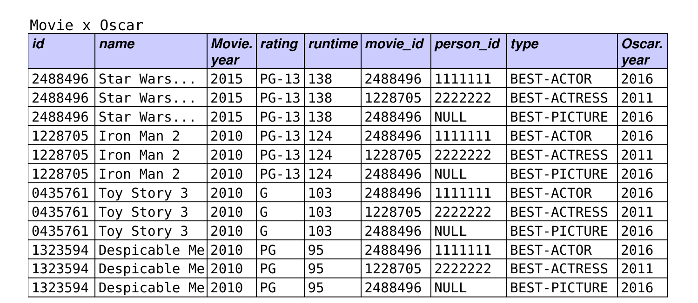
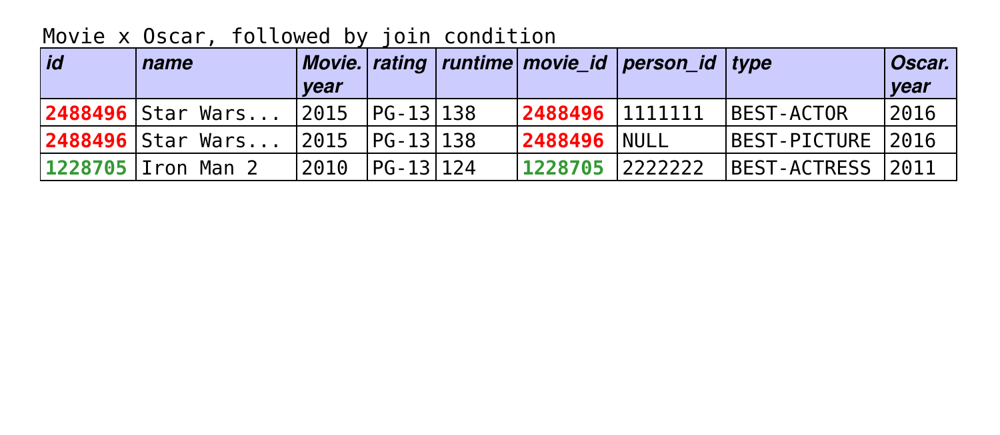
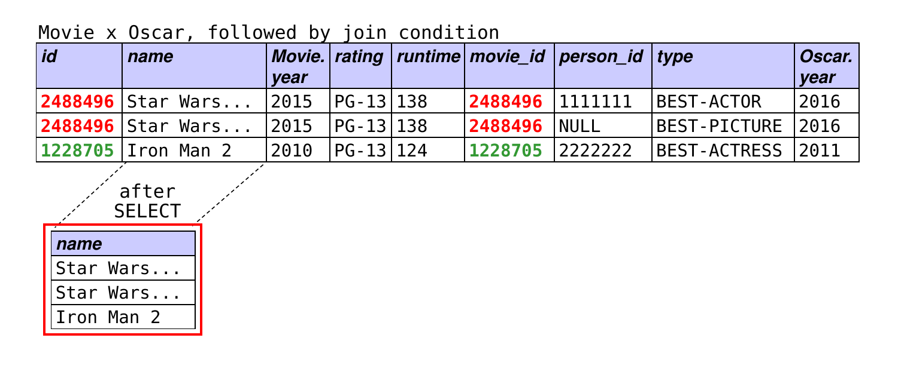
Counting Oscars Won by Movies
SELECT name, COUNT (* )FROM Movie, OscarWHERE id = movie_idGROUP BY name;
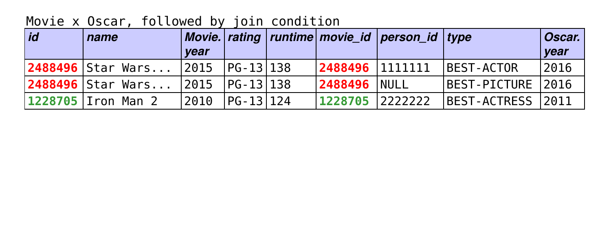
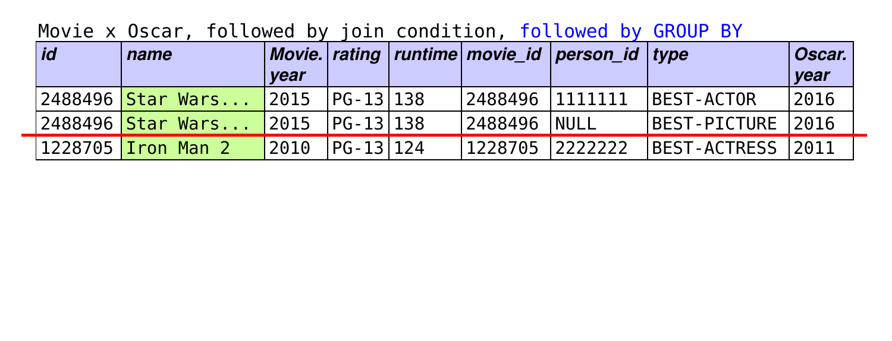
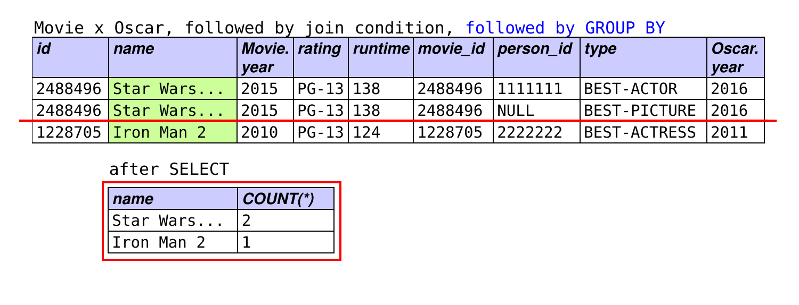
What if we wanted a count for each movie?
SELECT name, COUNT (* )FROM Movie, OscarWHERE id = movie_idGROUP BY name;
Which of these would work?
A.
SELECT name, COUNT (* ) FROM Movie, OscarWHERE id = movie_id GROUP BY name;B.
SELECT name, COUNT (type ) FROM Movie, OscarWHERE id = movie_id GROUP BY name;C.
SELECT name, COUNT (type ) FROM Movie LEFT OUTER JOIN OscarON id = movie_id GROUP BY name;D.
SELECT name, COUNT (* ) FROM Movie LEFT OUTER JOIN OscarON id = movie_id GROUP BY name;
Which of these would work? (answer)
A and B use a regular join, which loses the movies with no Oscars:
C is correct : COUNT(type) ignores the NULLs, giving 0 for movies with no Oscars.
D does not work: COUNT(*) counts the all-NULL rows, giving 1 instead of 0.
Practice Writing Queries
1) Find the names of all courses taken by data sci majors.
SELECT DISTINCT course_nameFROM Enrolled E, MajorsIn MWHERE E.student_id = M.student_idAND dept_name = 'data sci' ;
2) Find the number of students majoring in each department. (The result should be tuples of the form (dept name, # students).)
SELECT dept_name, COUNT (* )FROM MajorsInGROUP BY dept_name;
Practice Writing Queries (cont.)
3) Find the names and ids of all students who have a course in GCB 204.
SELECT FROM Student S, Enrolled E, Course C, Room RWHERE S.id = E.student_idAND E.course_name = C.nameAND C.room_id = R.id
SELECT DISTINCT S.id , S.nameFROM Student S, Enrolled E, Course C, Room RWHERE S.id = E.student_idAND E.course_name = C.nameAND C.room_id = R.id AND R.name = 'GCB 204' ;
Practice Writing Queries (cont.)
4) Find the names of all rooms in which one or more DS courses meet.
SELECT DISTINCT Room.nameFROM Course, RoomWHERE room_id = id AND Course.name LIKE 'DS%' ;
Practice Writing Queries (cont.)
5a) Find the number of DS majors enrolled in DS 310.
SELECT COUNT (* )FROM Enrolled E, MajorsIn MWHERE E.student_id = M.student_idAND course_name = 'DS 310' AND dept_name = 'data sci' ;
5b) Find the number of DS majors enrolled in a course.
SELECT COUNT (DISTINCT E.student_id)FROM Enrolled E, MajorsIn MWHERE E.student_id = M.student_idAND dept_name = 'data sci' ;
Practice Writing Queries (cont.)
6) Find the number of majors that each student has declared.
SELECT id , name, COUNT (dept_name)FROM Student LEFT JOIN MajorsInON Student.id = MajorsIn.student_idGROUP BY id , name;
The following will not work, because it counts the rows, rather than the number of non-NULL values:
SELECT id , name, COUNT (* )FROM Student LEFT JOIN MajorsInON Student.id = MajorsIn.student_idGROUP BY id , name;
Practice Writing Queries (cont.)
7) For each department with more than one majoring student, output the department’s name and the number of majoring students.
SELECT dept_name, COUNT (* )FROM MajorsInGROUP BY dept_nameHAVING COUNT (* ) > 1 ;